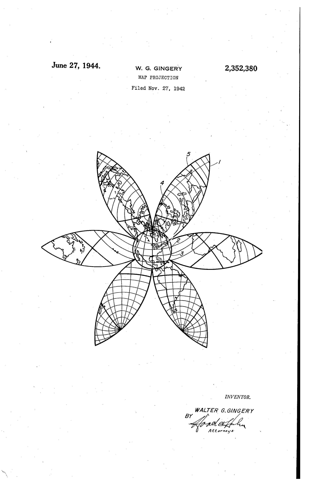
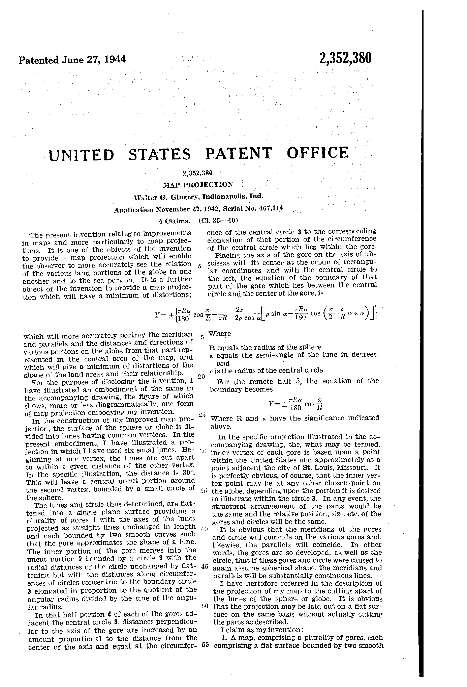
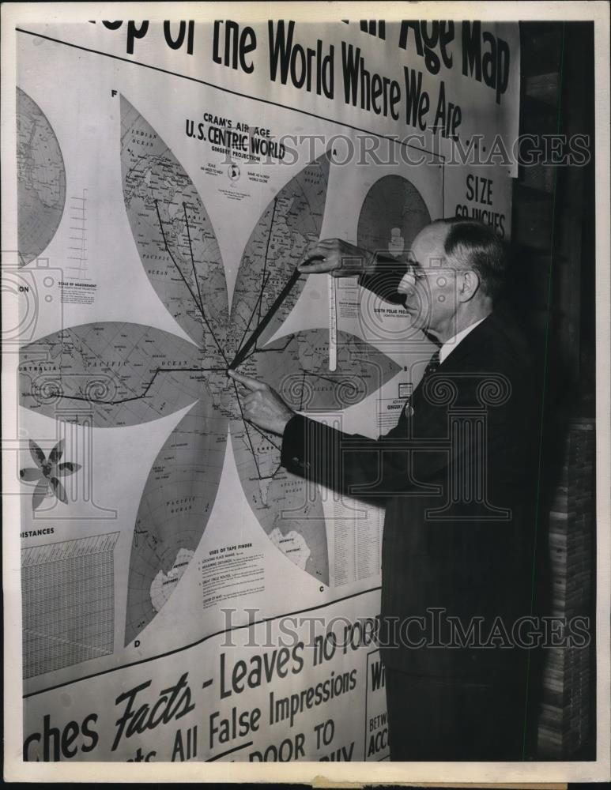
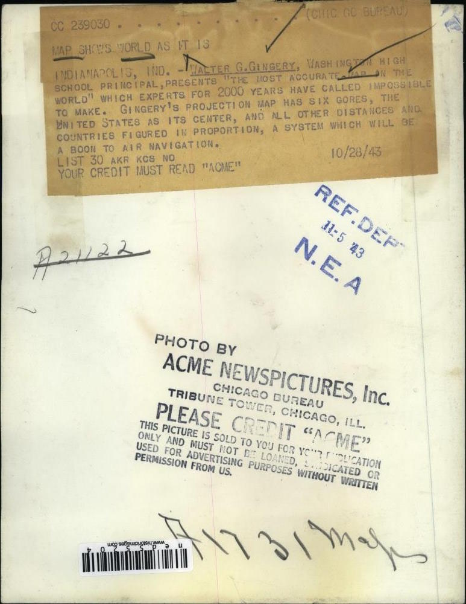

The above map is inspired by Cram’s Air Age. The red lines show air routes.
Christopher Ingraham brought this map to my attention recently.
The only mathematical explanation I could find was U.S. patent 2,352,380, filed by Walter G. Gingery in June 1944.
 
The globe is divided into a number of lunes, in this case six lunes, with the vertices of the lunes being at the projection’s origin (near Chicago) and its antipode.
The central portion is projected using the azimuthal equidistant projection, up to a given distance from the origin, in this case 30°. The remainder is cut along the lune boundaries outside this 30° circle, and the resulting gores are flattened.
The flattening of the lunes is the tricky (fun) part to implement. Gingery gives equations for the boundaries of the lunes in projected Cartesian coordinates. I have simplified them slightly by taking the origin to be the centre of the small circle, rather than the centre of the lune:
y = \alpha \sin x - k \left(x - \frac{\pi}{2}\right), where k = \frac{\rho \sin \alpha - \alpha \sin(\rho \cos \alpha)}{\frac{\pi}{2} - \rho \cos \alpha} for x \le \frac{\pi}{2}, otherwise k = 0.
We can assume these equations apply to all geodesics going from the origin to its antipode, not just the boundaries. Each geodesic can be parameterised by an angle \alpha relative to the gore’s central axis.
The parameter \rho is the radius of the central circle, which you can adjust below:
The step where the central circle meets the gore becomes more obvious as \rho gets larger; this projection is only useful for \rho smaller than around 60°.
The question is, how do we convert from geographic coordinates to Cartesian coordinates? Perhaps this is why his projection never really took off: Gingery gives no explanation of how this is actually done! However, we can figure this out from a few clues. From the patent:
The lunes and circle thus determined, are flattened into a single plane surface providing a plurality of gores with the axes of the lunes projected as straight lines unchanged in length and each bounded by two smooth curves such that the gore approximates the shape of a lune.
In other words, distances are preserved along the central axis of each gore, which is projected to a straight line. Note that distances are also preserved going from the origin to any point within the central circle of radius \rho, due to the azimuthal equidistant projection.
For points outside this central circle, it’s reasonable to assume that distances from the origin to these points are uniformly distorted along the portion outside the central circle. This is not clear from the patent, but it can be verified by closely inspecting the high-resolution Air Age map.
In order to ensure uniform distortion of distances along the curves, we need to calculate the length of the curves, which will give us an elongation factor e for each \alpha.
For a given geographic distance r along the geodesic, we need to find x and y such that the distance along the projected curve is equal to the geographic distance with the elongation factor applied.
The arc length along a curve y = f(x) from x = a to x = b can be found as follows:
s = \int_{a}^{b} \sqrt{ 1 + f'(x)^2 } \, dx
In our case:
s(x) = \rho + \int_{\rho}^{x} \sqrt{ 1 + \left( \alpha \cos t - k \right)^2 } \, dt
Using numerical integration (trapezoidal rule for now), we can find the total length of the projected curve: s(\pi), which gives us the elongation factor e = \frac{\pi - \rho}{s\left(\pi\right)}.
Finally, we’d like to find x such that r = \rho + \int_{\rho}^{x} \sqrt{ 1 + \left( \alpha \cos t - k \right)^2 } \, dt.
This time we use Newton’s method. We use numerical integration again to calculate s(x_{i}) for each iteration, eventually converging on a close enough value for x.
I believe it’s possible to solve this last step more efficiently using other means. Any ideas would be welcomed! For example, when k = 0, s(x) becomes an elliptical integral. Moreover, there are more efficient numerical integration methods than the simple trapezoidal rule that I’m using at the moment, and it feels wasteful to repeatedly perform numerical integration over the same range.
Here is a press photo of Gingery’s map, with an amusing caption:
INDIANAPOLIS, IND. - Walter G. Gingery, Washington high school principal, presents “the most accurate map on the world” which experts for 2000 years have called impossible to make. Gingery’s projection map has six gores, the United States as its center, and all other distances and countries figured in proportion, a system which will be a boon to air navigation.
 
The same photo appears in Popular Mechanics 81, no. 6 (June, 1944), page 49.
d3.geo.gingery in D3’s extended geographic projections plugin.